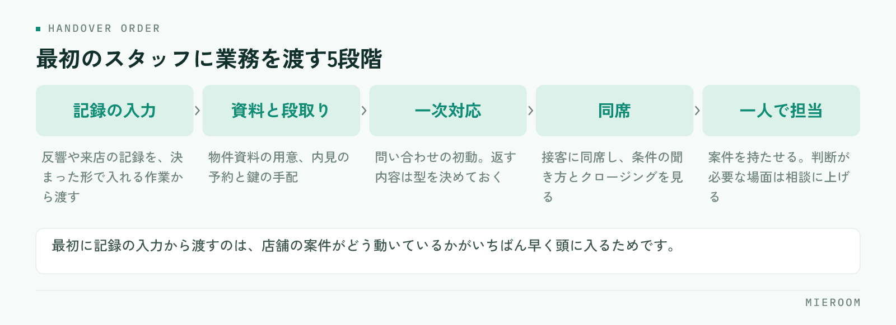

一人で店舗を回していると、反響が増えた月に必ず同じことを考えます。人を雇うべきか、まだ一人で持ちこたえるか。判断の材料になるのは売上の金額ではなく、取りこぼしが起きている場所です。どこで手が止まっているかが分かれば、採る時機と、何を任せるかが同時に決まります。
この記事の結論
採用は「忙しくなったら」ではなく「自分がいないと止まる仕事が増えたら」が目安です。最初の1人を接客に入れるか事務に入れるかは、取りこぼしが反響段階で起きているか、申込以降で起きているかで決まります。任せる順番を先に決めてから募集してください。
採用を考えるのは、忙しくなったときではなく手が止まったとき
一人店舗で判断を誤りやすいのが、「忙しさ」を基準にすることです。繁忙期は誰でも忙しくなります。忙しさが戻る時期に採用を決めると、閑散期に手が余ります。
見るのは忙しさではなく、自分が動けないときに止まる仕事がどれだけあるかです。内見に出ている1時間に反響の返信が止まる。申込の対応中に電話が取れない。この「止まっている時間」が毎日あるなら、取りこぼしが常態化しています。
もう一つの目安は、自分が休めないことです。体調を崩した日に店の機能が全部止まる状態は、売上の問題ではなく運営の問題です。一人で回す限界は、売上の額より先に、この2点で見えてきます。
止まっている時間の中身が、物件情報の転記や管理表の突き合わせといった作業なら、採用より先に作業そのものを削れる可能性があります。人を増やしてから、その人に同じ手作業を引き継ぐ形になると、辞めたときに元に戻ります。
雇う前に、自分の一日を3つに分けて書き出す
募集を出す前に、自分の1日の作業を3つに分けて書き出してください。分け方は、自分しかできないこと／教えれば任せられること／そもそも減らせることの3つです。
自分しかできないことは、条件のヒアリング、クロージング、家主や管理会社との交渉といった判断が必要な業務です。教えれば任せられることは、物件資料の用意、内見の段取り、申込書の不備確認、入金の記録などです。減らせることは、同じ内容を複数の場所に手で入力している作業です。
この3つを書き出すと、募集要項に書く仕事の中身が決まります。「賃貸仲介の業務全般」で募集すると、入社後に何から教えるかが決まっていないため、最初の1か月が流れます。
最初の1人は、接客担当か事務担当か
最初の採用でいちばん迷うのがここです。判断は、取りこぼしが起きている段階で決めてください。
| 判断の材料 | 接客担当を先に採る | 事務・業務担当を先に採る |
|---|---|---|
| 向いている状態 | 反響や来店に対応しきれず、返信や案内が遅れている | 申込以降の書類・入金・報告に時間が取られている |
| 任せること | 一次対応、物件提案の準備、内見の同行や案内 | 申込書の不備確認、入金の記録、資料作成、掲載の更新 |
| 立ち上がりの早さ | 時間がかかる。物件知識と条件の読み方が必要 | 比較的早い。手順が決まっている業務から渡せる |
| 注意点 | 教える時間を確保しないと、接客の質が揃わない | 判断が必要な場面で止まるため、確認の窓口を決めておく |
反響への返信が遅れて来店につながっていないなら接客側、申込から入金までの処理で夜が潰れているなら事務側です。どちらを採る場合も、店長が最後まで持つ業務を先に決めておくことが条件になります。全部を渡そうとすると、結果的にどちらも中途半端になります。
入社後に任せる順番を決めておく
入社初日から接客に入れる形は、ほとんどの店舗でうまくいきません。渡す順番を決めておくと、本人も店側も迷いません。

- 記録の入力：反響や来店の記録を、決まった形で入れる作業から渡します
- 資料と段取り：物件資料の用意、内見の予約と鍵の手配
- 一次対応：問い合わせの初動。返す内容は型を決めておく
- 同席：接客に同席して、条件の聞き方とクロージングを見る
- 一人で担当：案件を持たせる。判断が必要な場面は相談に上げる
順番の考え方は新人育成の順番で詳しくまとめています。最初に記録の入力から渡す理由は、店舗の案件がどう動いているかが、入力を通していちばん早く頭に入るためです。
初日までに用意しておくもの
採用が決まってから初日までに、次の4つを用意しておいてください。どれも当日に用意しようとすると、初日の半分が準備で消えます。
- 作業の手順書：完璧なものは不要です。渡す業務の手順だけを箇条書きで
- 使うツールの権限：当日に見られる状態にしておく。パスワードの共有方法も決めておく
- 聞く相手の決め方：誰に、どのタイミングで聞くかを決めておく
- 最初の1か月に渡す業務の順番：上の5段階のうち、どこまで進めるかを決める
最初から整った手順書を作ろうとすると、いつまでも募集に進めません。渡す業務の分だけ書いて、入った人が詰まった箇所を足していく形にしてください。詰まった場所がそのまま手順書の抜けなので、本人に追記してもらうと早く育ちます。
よくある失敗：教える時間を見込んでいない
一人店舗の採用でもっとも多い失敗は、教える時間を業務時間に入れていないことです。採用した月は、自分の作業時間が増えます。ここを見込まずに繁忙期の直前に採用すると、教える時間が取れず、本人は何をすればよいか分からないまま時間が過ぎます。
次に多いのが、口頭だけで教える形です。忙しい日に伝えたことは、翌週には残っていません。記録として残らない引き継ぎは、同じ説明を何度も繰り返すことになります。
もう一つは、任せた業務の結果を見ていないことです。渡したあとに確認する項目を決めていないと、間違った手順のまま進み、あとでまとめて直すことになります。店長側が何をいつ見るかは、店長の仕事の段取りの考え方をそのまま使えます。
未経験者と経験者、どちらを採るべきですか？
パートやアルバイトからでも大丈夫ですか？
採用した人が辞めてしまったときに備えることはありますか？
まとめ：採る前に、渡す仕事と見る項目を決める
初めての採用で決めておくことは3つです。取りこぼしが起きている段階から接客か事務かを選ぶこと、任せる業務の順番を5段階で決めること、教える時間を業務時間に入れておくこと。この3つが決まっていれば、入社後の1か月が流れません。
そして募集を出す前に、自分の1日を3つに分けて書き出す作業を飛ばさないでください。ここが曖昧なまま人を増やすと、忙しさは変わらないまま人件費だけが増えます。
ミエルームなら、反響・接客・申込から入金までの記録が案件ごとに1か所に残るので、入ったばかりの人でも過去の経緯を自分で読んで追えます。勤怠や給与もあわせて扱えるため、教えることと管理することが別々の作業に分かれません。口頭での引き継ぎと確認の往復が減り、店長が接客と判断に時間を使えるようになります。デモアカウントの発行やご相談は、この下のボタンからお気軽にどうぞ。